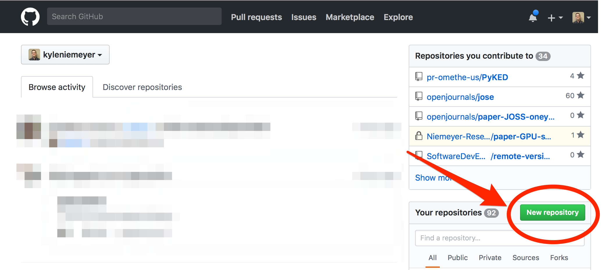
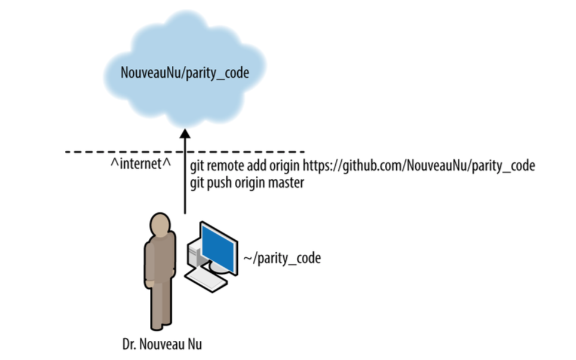
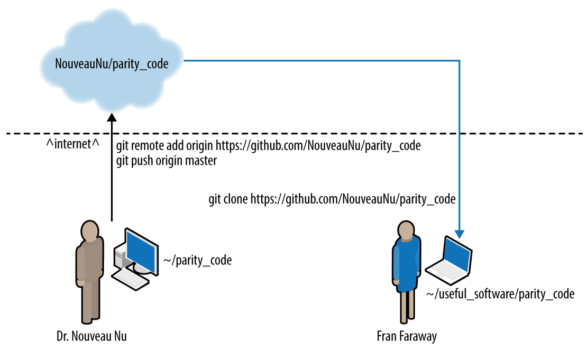
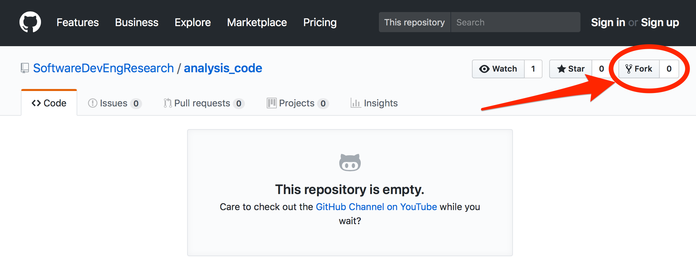
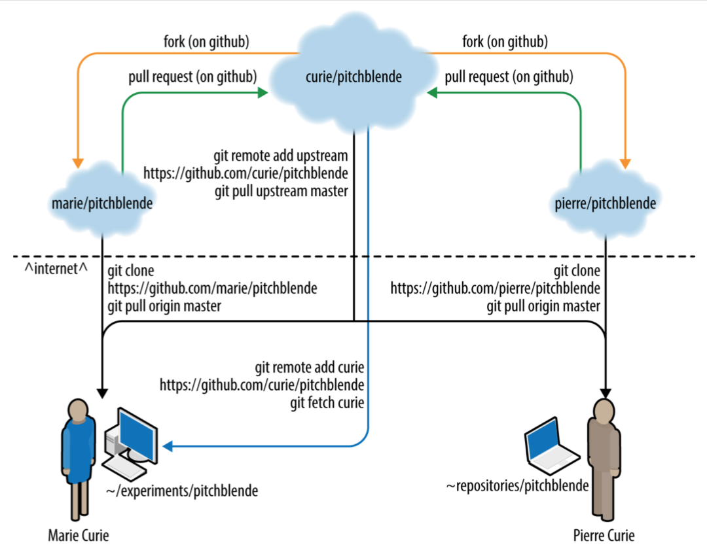
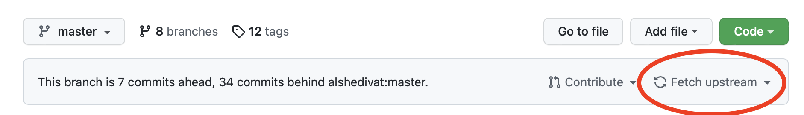
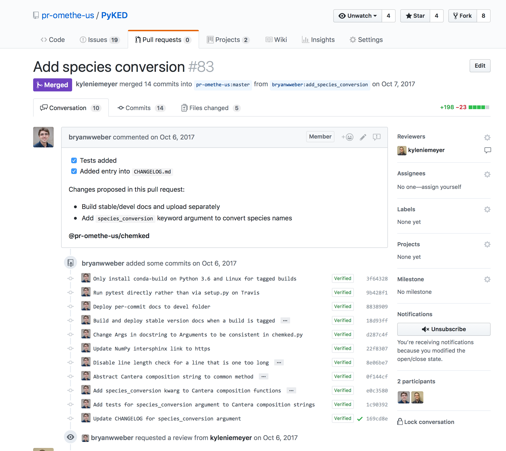
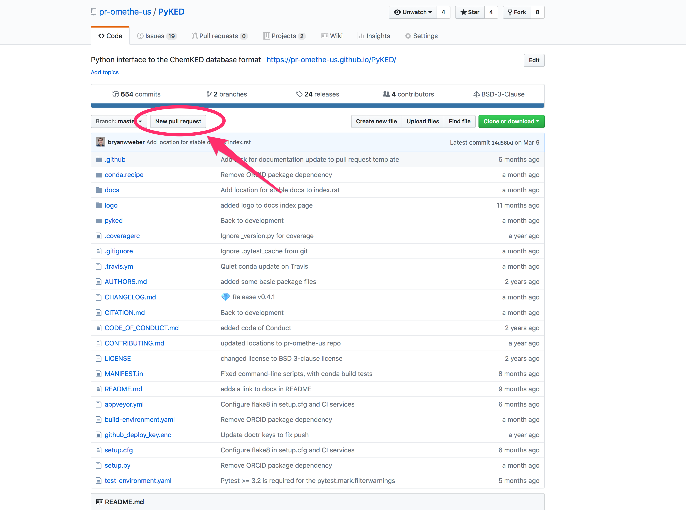

Remote version control with Git
Oregon State University
2025-01-08
Remote version control (i.e., using GitHub) and Software Licenses
Topics for today:
- Backup up code (and any files) online
- Cloning and forking remote repositories
- Managing files in a collaboration
- Merging simultaneous changes
- Downloading open source code
Repositories


We’ll focus on GitHub.
Why GitHub?
- Nice landing page—renders README automatically
- Grabs information about LICENSE, programming language
- Supports issue tracking and wiki
- Network graphs, time history of commits
- User downloads
- Varying permissions (read, write, etc.)
- Nice web interface to browse, view, and edit code
Workflow (with account)
- Create space for repo on GitHub account
- Point to that remote repo from local copy
- Push repository to the remote location
- Continue working!
Alternatively, if starting new project, you can:
- Create a new repo on account
- Copy (clone) empty repo to local computer
- Prosper!
Creating and working with repositories
Let’s work through creating a repo
Create and push new repo
Cloning a repo
Terminology
Clone: make local copy of any repository (Git)
Fork: Remote repository connected to/aware of the “upstream” repo it was cloned from (GitHub)
Forking a repo
Collaborative work using GitHub
How does Fran keep local repo up to date with the original?
Do this yourself:
- Fork it: click “Fork” at SoftwareDevEngResearch/analysis_code
- Clone your fork:
$ git clone https://github.com/[you]/analysis_code.git - Create alias
upstreamfor the remote repo:
Fetching and merging remote content
- In your cloned local repo, fetch the upstream repo history
- Then merge the
upstreammain branch into your main branch - Look at the changes!
Update your fork
What if you (or someone else) made a change in your fork?
pull = fetch & merge for origin main
Alternatively, use GitHub
What about conflicts?
When fetching, merging, and/or pulling remote changes, you may encounter conflicts.
To solve: just follow the directions!
(In-class example)
Best practices for collaborating
For solo projects:
- push and pull (to/from origin
- use branches, merge into main
For multi-person projects:
- Fork into a personal repo
- Use git fetch/merge to keep updated with upstream
- Push (and pull) to/from origin (your fork on GitHub)
- Contribute changes via pull requests on GitHub
(Some) issues that arise when using GitHub: Pull requests & licences
Pull Requests
Modern, GitHub-based version of emailing someone a patch
Pull Requests (or PRs) consist of sequences of patches, based on a history of Git commits
Example Pull Request on GitHub
How to contribute a change to someone else’s repository
- Fork the repo
- Clone your fork locally
- Create a new branch for your changes/fix
- Commit and push your changes
- Submit a Pull Request via GitHub
Create Pull Request
Submitting Pull Requests
Try to submit shorter Pull Requests when possible, as they are easier to review and merge
If the project uses testing, make sure to add a new test (or modify an existing one) to reflect your change. More on tests later!
Software Licenses & Copyright
Important notice
I AM NOT A LAWYER!
AKA: IANAL
Copyright
Facts and ideas are not copyrightable.
Expressions of ideas are copyrightable.
Copyright Examples
Game rules are not copyrightable (chess, Go, football, Dungeons & Dragons)
Expressions of game rules are copyrightable.

Basic Copyright
“Right of First Publication”: copyright automatically goes to the first creator of any creative work
(Even if not explicitly specified)
Consequence: if you post software to GitHub without an explicit license, then you own the copyright—even if openly and publicly visible.
By default, no one else is legally allowed to use or modify your work.
Software Licenses
All software codes you make publicly available should be accompanied by a software license describing the terms by which others may use and/or modify your code.
Public Domain
Alternatively, you can put work into the public domain: “This work has been placed in the public domain.”
Free for anyone and everyone to use and modify.
Literature examples: Sherlock Holmes, Frankenstein
(There are some tricky issues internationally, however.)
Software Licenses
Kinds of software licenses: proprietary, and free/open source (FOSS, FLOSS, OSS).
Pick an existing license. Do not create your own.
Software Licenses
FOSS categories: permissive, and “copyleft”
Permissive licenses: BSD 3-clause, MIT; allow further distribution under any license
Copyleft licenses: GPL; require modifications to be shared under the same license (“viral”)
https://choosealicense.com

Open Source Initiative licenses

Which license to use?
When in doubt, use a permissive license like the BSD 3-clause or MIT licenses.
Copyrighting other creative works: Creative Commons
- BY: Attribution
- SA: ShareAlike
- ND: NoDerivatives
- NC: NonCommercial
Licenses: CC BY, CC BY-SA, CC BY-NC, CC BY-NC-NC
Beyond copyright & licenses
Patents: cover ideas and concepts; modern issues with “patent trolls”
Trademarks: symbols that represent a business or organization
Export control: government may forbid the transfer of source code (and data, ideas) to another country or foreign national without permission
HIPAA compliance: software that deals with human patients must be anonymized
Long story short:
Pick a license when creating a project, and put as LICENSE.txt in your repo.